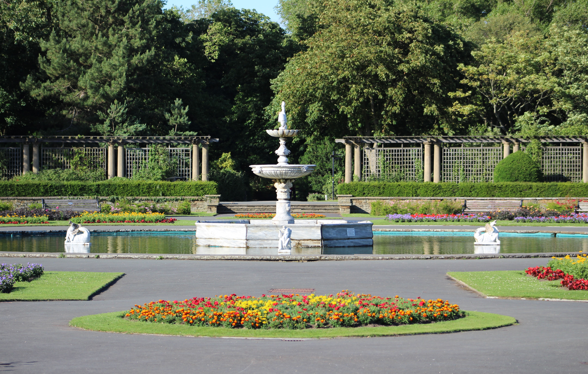
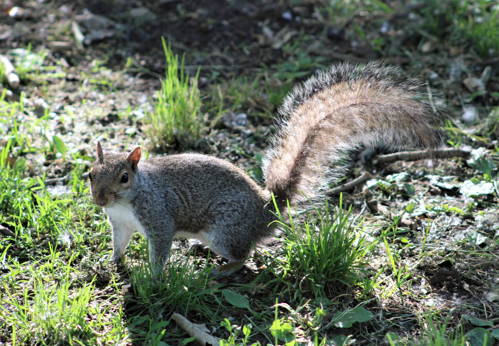
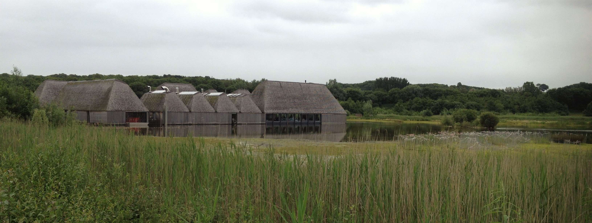
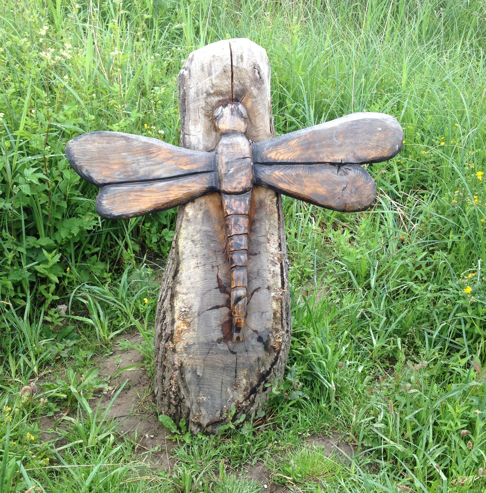
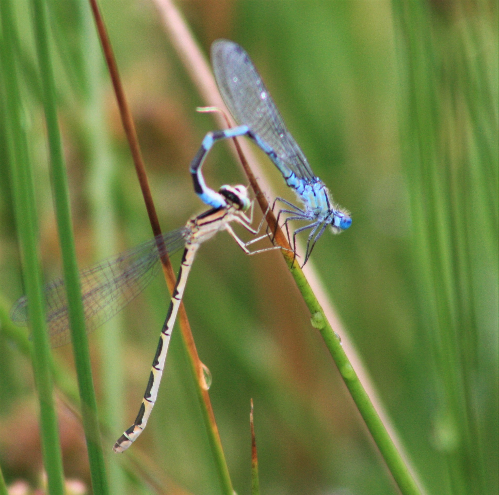

Watching the wildlife.
26-Jun-2017 | Milku
In Stanley Park and Brockholes.
It's Day 26 of 30 Days Wild and I admit that I've been lazy...no posts for two whole days. I deserved a rest. I did! It's hard work entertaining humans...and they keep making me go to the upper platforms in my cage to get my food!
Over the weekend, my humans went out twice in search of nature. But I thought it wouldn't matter too much if I didn't update you about those trips until today...my humans were still tweeting to @30DaysWild about anything they'd done. I thought it'd be better to bore you only once!
Stanley Park in Blackpool has beautiful managed gardens and plenty of the usual leisure facilities associated with urban parks.
However, it also has areas given over to wildlife, which are interesting to explore and provide a home to a variety of animals. Now, my humans don't think too highly of grey squirrels. After all, my humans have connections to Formby, which has a colony of red squirrels and the greys (grey squirrels that is not some extra-terrestrial visitors) have caused problems for Formby's red squirrels. But you can't be too picky if you want to photograph wild animals in Blackpool...so they were delighted, for once, to spot a grey squirrel in the park. Apparently, it was quite a feisty beast, willing to challenge a nearby pigeon for food.
On Sunday, my humans decided to go to Brockholes, a nature reserve that has transformed some old gravel pits into a wonderful area for wildlife.
Normally, some of the little humans will object to heading out anywhere that will involve a long walk. But the bigger ones think they've found the perfect way to overcome these objections...hand over a camera and encourage them to get creative. It was just as well yesterday because the big one forgot to put a memory card in her camera! I hope she'd corrected that mistake when she got me to pose for photos yesterday...I don't smile for just anyone, you know.

They saw fish leaping out of the River Ribble as they walked along the banks. Don't expect to see any photos of that. Just take their word for it. They did, however take some nice pictures of dragonflies - real and carved.
 I think my humans will share their pictures of the wild flowers and other creatures they encountered later in the week.